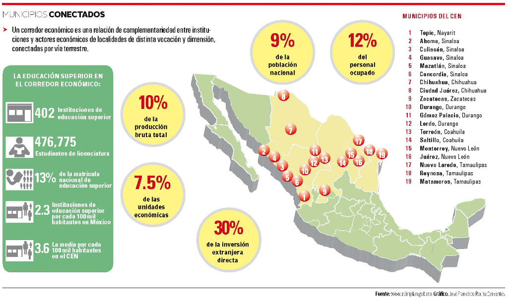

El Corredor Económico del Norte (CEN) es una red de 19 municipios que se estructuran y organizan para generar mecanismos que fortalezcan el desarrollo económico, social y cultural de los municipios que lo conforman, a través del intercambio de experiencias, proyectos en conjunto y acuerdos de cooperación.
Este corredor recorre el Océano Pacífico desde Tepic a Ahome (Los Mochis) y se conecta hacia el Golfo de México desde Mazatlán hasta Matamoros, Tamaulipas; comunicando además de sur a norte de Zacatecas a Ciudad Juárez. Cuenta con cuatro ciudades fronterizas como son Juárez, Nuevo Laredo, Reynosa y Matamoros. Tiene puertos como Mazatlán y Topolobampo (Ahome) en el Pacífico y Matamoros en el Golfo. Sus municipios con un importante desarrollo industrial son: Monterrey, Chihuahua, La Laguna y Saltillo. Sus ciudades con valor histórico y cultural son Durango y Zacatecas.
Justo en el centro de ese corredor se encuentra la Zona Metropolitana de la Laguna anfitriona del 6to Encuentro de Instituciones del Corredor Económico del Norte a celebrarse el 30 de Septiembre, 1 y 2 de Octubre en las ciudades de Torreón, Gómez Palacio y Lerdo.
Un corredor económico es una relación de complementariedad entre instituciones y actores económicos de localidades de distinta vocación y dimensión, conectadas por vía terrestre. Los acuerdos de un corredor económico ayudan a definir escenarios para el desarrollo de infraestructura, promover la inversión entre el sector público y el privado y diversificar la base productiva regional tomando en consideración las características de sus recursos.
El índice de especialización manufacturera del Corredor es de 52%, ligeramente superior al 48% nacional. A su vez 31 % del personal ocupado se encuentra en este sector mientras a nivel nacional es 23 %. En los 19 municipios el salario promedio es de 5,975 pesos mensuales, similar a la media nacional, sin embargo en la región se privilegia el trabajo formal. Se tiene 42% de tasa de informalidad muy por debajo del 58% nacional.
Una característica relevante del corredor respecto a otras zonas del país es su capital humano. El grado promedio de escolaridad nacional es de 8.4 años de estudio mientras en el corredor es de 9.5, destacándose Zacatecas, Monterrey, Torreón, Tepic y Saltillo con medias superiores a los 10 años de estudio.
En los municipios del CEN se registran 402 instituciones de educación superior con un total de 476,775 estudiantes de licenciatura, que representan 13 % de la matrícula nacional de educación superior. Mientras a nivel nacional existen 2.3 instituciones de educación superior por cada 100 mil habitantes, la media en el corredor es de 3.6 por cada 100 mil habitantes.
La participación ciudadana se refleja en la proporción de organizaciones de la sociedad civil, que en el Corredor es de 30 por cada 100 mil habitantes. A nivel nacional son 25. Destacan Zacatecas, Durango, Tepic, Torreón y Gómez Palacio con más de 50 organizaciones por cada 100 mil habitantes.
En nuestro país se transportan por vía aérea 41 millones de pasajeros anuales, de los cuales más de la mitad se concentran entre los aeropuertos de la Ciudad de México (14 millones) y Cancún (7 millones). El CEN cuenta con 15 aeropuertos que transportan más de cinco millones de pasajeros anuales, destacando el aeropuerto de Monterrey con 3 millones.
En resumen, la Zona Metropolitana de la Laguna destaca en la proporción de instituciones educativas y estudiantes universitarios, la productividad media por trabajador, la baja informalidad y la participación ciudadana.
Torreón en particular, añade a sus indicadores de competitividad regional la transparencia gubernamental reconocida por el Índice de Información Presupuestal del IMCO, un alto grado promedio de escolaridad y un alto Índice de Desarrollo Humano.

Corredor Económico del norte en números
- 9% de la población nacional
- 12% del personal ocupado
- 10% de la producción bruta total
- 7.5% de las unidades económicas
- 30% de la inversión extranjera directa
La educación superior en el Corredor Económico
- En los municipios del CEN se registran 402 instituciones de educación superior.
- Hay un total de 476,775 estudiantes de licenciatura.
- Los estudiantes representan 13 % de la matrícula nacional de educación superior.
- A nivel nacional existen 2.3 instituciones de educación superior por cada 100 mil habitantes.
- En el CEN la media es de 3.6 por cada 100 mil habitantes.
Municipios
- Tepic, Nayarit
- Ahome, Sinaloa
- Culiacán, Sinaloa
- Guasave, Sinaloa
- Mazatlán, Sinaloa
- Concordia, Sinaloa
- Chihuahua, Chihuahua
- Ciudad Juárez, Chihuahua
- Zacatecas, Zacatecas
- Durango, Durango
- Gómez Palacio, Durango
- Lerdo, Durango
- Torreón, Coahuila
- Saltillo, Coahuila
- Monterrey, Nuevo León
- Juárez, Nuevo León
- Nuevo Laredo, Tamaulipas
- Reynosa, Tamaulipas
- Matamoros, Tamaulipas